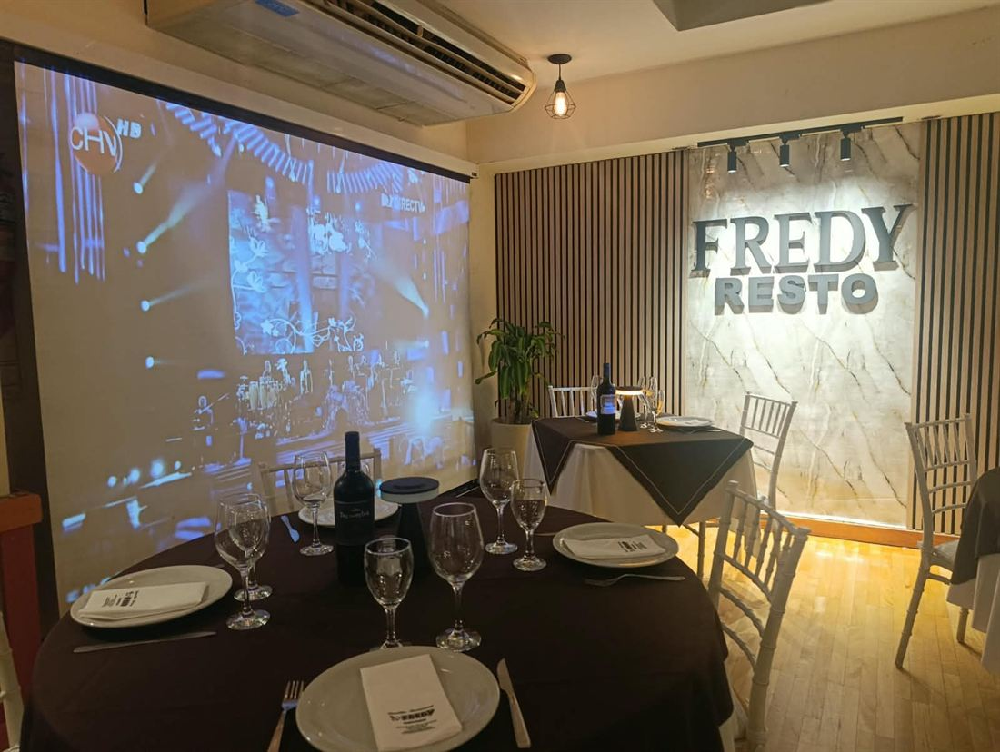
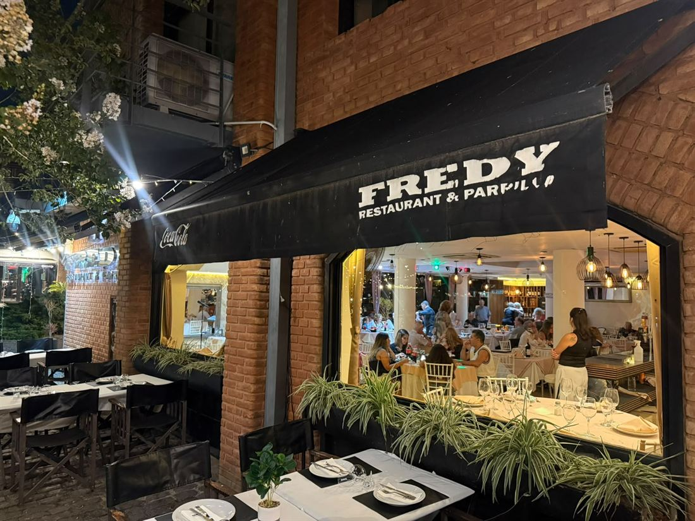
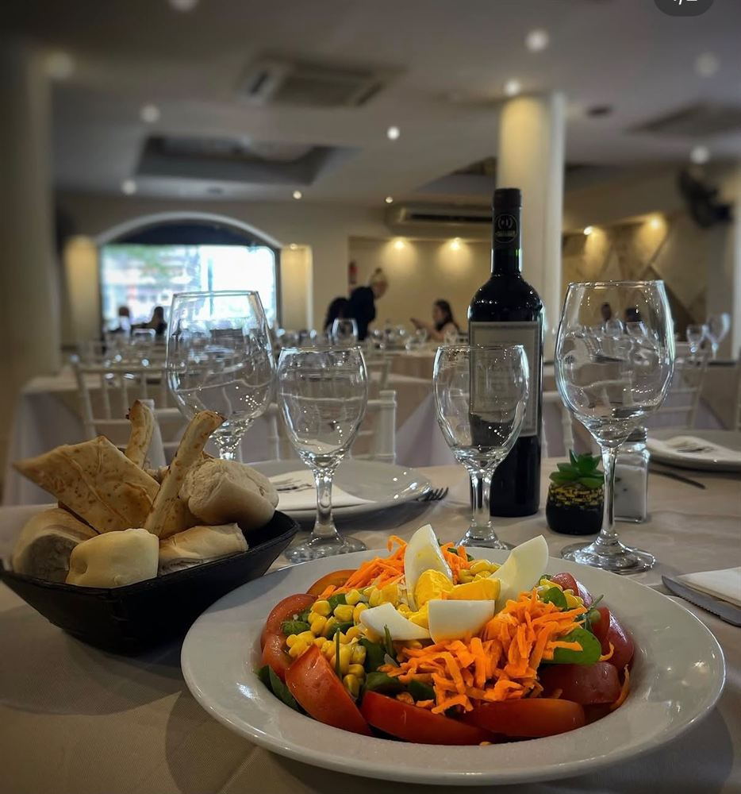

Mediodía
Promo ejecutiva
Mini parrillada o bife de chorizo, con guarnición, bebida y postre.
Bienvenidos · Puerto Madero
Parrilla argentina sobre la costanera de Puerto Madero. Cortes a la brasa, vista a los docks y noches de show en vivo.


Una parrilla clásica, frente al río.
Fredy es una parrilla tradicional sobre la costanera de Puerto Madero: sencilla, familiar y con el río de fondo. Abrimos en 2010 y venimos de una cadena de carnicerías familiar de varias generaciones.
Conocer la historiaDel fuego a tu mesa.
Cena show en vivo, frente al río.
Solistas y dúos en vivo mientras cenás frente al río. Ideal para festejar en grupo.
Precio del menú y adicional por show (si corresponde), informados antes de reservar.
Ver las noches de showMediodía, pedidos y eventos.
Mediodía
Mini parrillada o bife de chorizo, con guarnición, bebida y postre.
Pedí online
Armá tu pedido y retiralo en el local. Lo enviás por WhatsApp y ahí te confirmamos el total y cómo pagar.
Eventos
Cumpleaños, aniversarios, despedidas y empresas. Salón, terraza, DJ y barra de tragos.
Lo que dicen de Fredy.
¿Ya nos visitaste? Tu opinión nos ayuda a mejorar y a que otros nos conozcan.
Dejanos tu reseña Ver todas en Google
Te esperamos frente al río.
Bienvenidos
Fuego, río y música.
Una experiencia argentina frente al río.